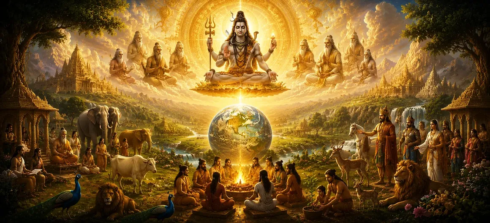

After the creation of living beings, the sages raised another important question. If countless creatures now inhabited the universe, what would guide their actions and maintain harmony among them? Without a higher principle, creation could easily descend into disorder and conflict. The sages wished to understand how righteousness first emerged and how the universe was governed after life had appeared. The sacred narration explains that Lord Shiva, the supreme source of creation, did not merely create living beings and leave them without direction. Out of divine wisdom and compassion, He established Dharma—the eternal principle that sustains order, justice, harmony, and spiritual progress throughout the universe.
The Shiva Purana teaches that Dharma is far more than a set of rules or duties. It is the divine order woven into creation itself. The movements of the stars, the changing seasons, the growth of life, and the moral responsibilities of living beings all operate according to Dharma. It is the unseen force that preserves balance in both the physical and spiritual worlds. This chapter reveals how Dharma was established among gods, sages, humans, and all living creatures. Through its guidance, beings learn to live in harmony with one another and move steadily toward their highest spiritual destiny. Thus, Dharma becomes the bridge connecting creation to the Supreme Lord.
The sages were taught that Dharma did not arise from human thought or social customs. It originated from the divine wisdom of Lord Shiva Himself. Before living beings could properly fulfill their roles within creation, a universal law was needed to guide their actions and maintain harmony throughout the cosmos. Thus, Dharma was established as an eternal principle existing alongside creation. It became the foundation upon which righteous conduct, justice, truthfulness, compassion, and spiritual growth would rest. Through Dharma, creation received both purpose and direction.
Even the gods were expected to follow Dharma. Their duties included protecting creation, maintaining cosmic balance, and assisting living beings in their spiritual progress. The divine powers entrusted to them were not meant for personal gain but for the welfare of the universe. The Shiva Purana explains that the greatness of the gods comes not merely from their power but from their commitment to Dharma. By faithfully carrying out their responsibilities, they became examples of righteous conduct for all beings.
The sages were entrusted with preserving sacred knowledge and teaching future generations. Their Dharma was to pursue truth, practice self-discipline, perform austerities, and guide society through wisdom rather than force. Through meditation and spiritual realization, the sages became living embodiments of Dharma. Their lives demonstrated that true greatness arises not from wealth or power but from knowledge, humility, and devotion to the Supreme Lord.
Speaking and living according to truth.
Showing kindness toward all living beings.
Performing one's duties with integrity.
Human beings were granted the responsibility of consciously choosing Dharma. Unlike many other creatures that primarily follow instinct, humans possess the freedom to choose between righteousness and wrongdoing. Therefore, human life carries both great opportunity and great responsibility within the divine order.
Once Dharma had been established, it required protection and preservation. The Shiva Purana explains that whenever righteousness weakens and disorder begins to spread, divine forces arise to restore balance. Through sages, saints, noble rulers, and divine interventions, Dharma is continually safeguarded for the benefit of all beings. This protection is not limited to a single age or place. Throughout every era, Lord Shiva ensures that the path of righteousness remains available to those who sincerely seek truth and spiritual growth.
The sages were also taught that neglecting Dharma leads to suffering, confusion, and imbalance. When individuals act solely for selfish desires without regard for truth or justice, harmony begins to deteriorate both within society and within the individual heart. The Shiva Purana emphasizes that the laws of Karma ensure that every action eventually produces its appropriate result. Thus, Dharma serves not merely as a moral teaching but as a practical guide for maintaining peace, prosperity, and spiritual well-being.
Although Dharma helps maintain worldly order, its ultimate purpose extends far beyond social harmony. Dharma gradually purifies the mind, disciplines the senses, and prepares the soul for higher spiritual realization. It becomes the foundation upon which devotion, wisdom, and liberation are attained. Those who faithfully follow Dharma develop inner purity and steadily move closer to the realization of Lord Shiva. In this way, Dharma serves as a bridge connecting ordinary life with the highest spiritual truth.
Dharma provides guidance for all beings.
It preserves harmony throughout creation.
It leads sincere seekers toward the Supreme Lord.
Upon hearing these teachings, the sages rejoiced. They understood that creation was not governed by chance but by a divine order rooted in wisdom and compassion. Filled with gratitude toward Lord Shiva, they prepared themselves to hear further revelations concerning the unfolding of creation.
The Shiva Purana explains that Dharma is not merely an individual responsibility but also the foundation upon which healthy societies are built. Families, communities, kingdoms, and entire civilizations flourish when truth, justice, compassion, and self-restraint are respected. When people perform their duties with sincerity and integrity, harmony naturally arises. Thus, Dharma acts as the invisible force that binds society together and allows collective prosperity to grow.
Living and speaking honestly.
Kindness toward all beings.
Acting fairly and responsibly.
Remaining connected to the Divine.
The sages learned that these principles support the practice of Dharma across all ages. Whenever they are honored, harmony grows. Whenever they are neglected, suffering gradually increases.
Kingdoms rise and fall, civilizations appear and disappear, and even cosmic ages pass away. Yet Dharma itself remains eternal. Though its expression may vary according to time, place, and circumstance, its essential principles never change. Because Dharma originates from the Supreme Lord, it exists beyond the limitations of history. It continues to guide beings through every age, serving as a beacon of righteousness amidst the changing conditions of the world.
Having learned how Dharma was established within creation, the sages felt a deeper appreciation for the wisdom through which the universe is governed. They understood that creation is sustained not merely by power but by eternal principles rooted in divine truth. With minds illuminated by this sacred knowledge, they respectfully bowed before Lord Shiva and prepared to hear about another profound mystery—the recurring cycles through which creation arises, endures, dissolves, and begins anew.
"Dharma is the eternal path established by the Supreme Lord. It sustains creation, protects righteousness, guides the soul through life, and ultimately leads every sincere seeker toward liberation and union with Lord Shiva."
The establishment of Dharma within creation has now been revealed. Continue to the next chapter to explore the eternal cycles through which the universe is repeatedly created, sustained, dissolved, and renewed under the divine will of Lord Shiva.